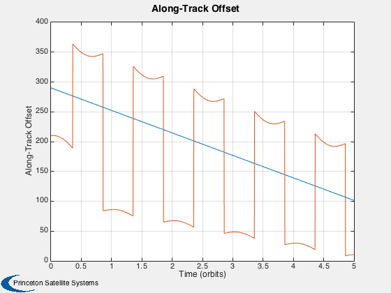
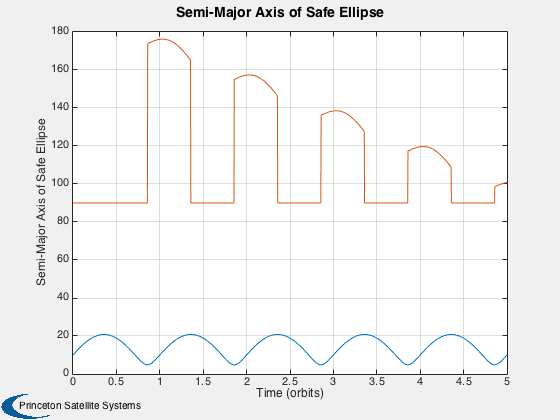
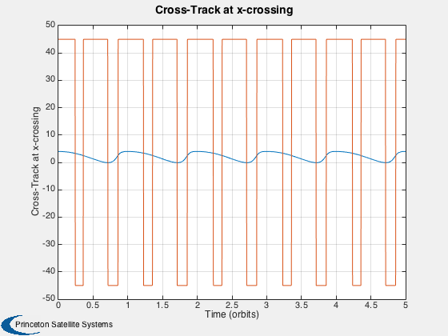
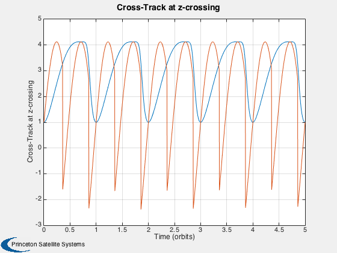
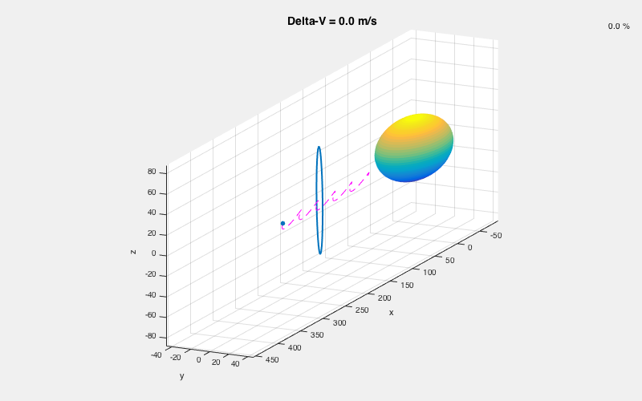

Demonstrate the safe ellipse for safe relative orbit guidance
Show how the target safe ellipse changes during relative motion
Since version 10. ------------------------------------------------------------------------ See also HillsEqnsSLO, SafeEllipseParams, NominalSafeGuidance, AnimateRE ------------------------------------------------------------------------
Contents
%-------------------------------------------------------------------------- % Copyright (c) 2012 Princeton Satellite Systems, Inc. % All rights reserved. %--------------------------------------------------------------------------
Demo parameters
n = 1E-3; % mean orbit rate nOrb = 5; % number of orbits dMin = 60; % minimum separation distance for avoidance region r0 = [300;4;0]; % initial relative position in SLO frame v0 = [2;-1;-5]*n; % initial relative velocity in SLO frame
Define time vector and initial state vector
T = 2*pi/n;
nPPO = 300; % number of points per orbit
t = linspace(0,nOrb*T,nOrb*nPPO);
xSLO = HillsEqnsSLO([r0;v0],n,t);
initialize fields used in NominalSafeGuidance
inputs.maneuverImmediately = 0; state.n = n; state.tM = 60; parameters.minTimeBtwnDeltaVs = 300; parameters.dMin = dMin; parameters.margin = dMin/2;
Initialize arrays for plotting
nt = length(t); x0 = zeros(1,nt); x02=x0; aE = zeros(1,nt); aE2=aE; yA = zeros(1,nt); yA2=yA; yR = zeros(1,nt); yR2=yR; alpha = zeros(1,nt); dV = zeros(1,nt);
Compute safe ellipse across all relative states
for j=1:length(t) % Compute the nearest "safe ellipse" that touches this position rSLO = xSLO(1:3,j); vSLO = xSLO(4:6,j); [x0(j),aE(j),yA(j),yR(j),alpha(j)] = SafeEllipseParams( rSLO,vSLO,n ); % Compute a target "safe ellipse" that is outside the projection of the % avoidance region onto the cross-track / radial plane state.xSLO = [rSLO;vSLO]; state.xH = LVLH2Hills(state.xSLO); [deltaV,desTraj,tracking] = NominalSafeGuidance( inputs, parameters, state ); dV(j) = sum(Mag(deltaV.dV)); % Store results into plotting arrays x02(j) = desTraj.x0; aE2(j) = desTraj.aE; yA2(j) = desTraj.yA; yR2(j) = desTraj.yR; end
Compare and animate the safe ellipse from NominalSafeGuidance
Plot2D(t/T,[x0;x02],'Time (orbits)','Along-Track Offset') Plot2D(t/T,[aE;aE2],'Time (orbits)','Semi-Major Axis of Safe Ellipse') Plot2D(t/T,[yA;yA2],'Time (orbits)','Cross-Track at x-crossing') Plot2D(t/T,[yR;yR2],'Time (orbits)','Cross-Track at z-crossing') AnimateRE( xSLO, x02, aE2, yA2, yR2, dMin, dV ); %-------------------------------------- % PSS internal file version information %--------------------------------------    